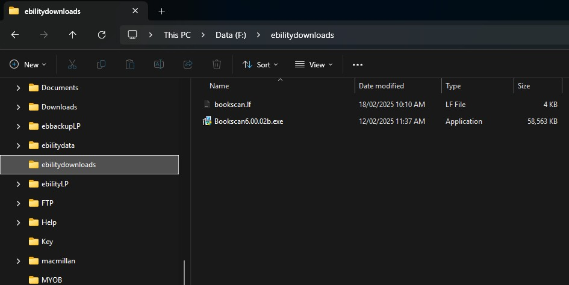
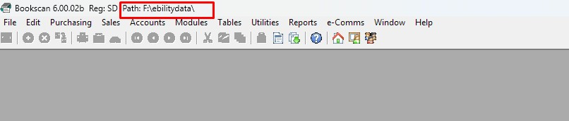
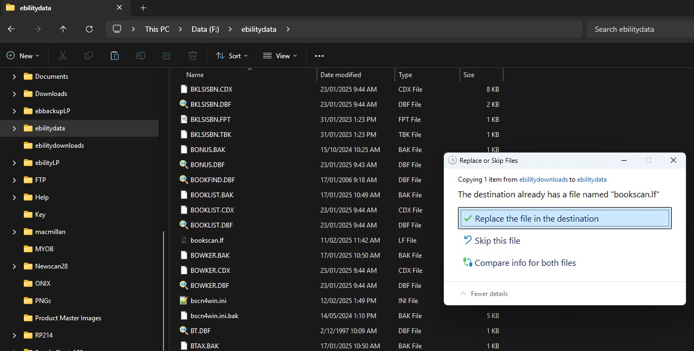

After receiving a new license file from sales/support via email, and then saving the email attachment into a location accessible to other computer (Be it the L:\e-Bilitydownloads\ or a USB memory stick).
On each computer that runs Bookscan, open the location the new license file has been saved (e.g. Computer -> L:\e-Bilitydownloads\ or your USB memory drive once plugged into the PC).

Right click on the file Bookscan.lf, then select the Copyoption, icon, or use CTRL-C. By preference, the license file is saved to your database folder, which can be seen at the top of the Bookscan window. This means you only have to replace it once for all PCs rather than on each one individually.

Navigate to the location shown, (or if your licenses are local on each PC, the location of C:\Program Files (x86)\Bookscan\ (Or C:\Program Files\Bookscan\for a 32 bit system. You can also just type this in the Address field.)

Right click where the files are listed and select Paste option. When there is an existing license in either location you will be prompted to replace your existing file, click the Replace the file in the destination button.
You must then repeat the process on all other computers running Bookscan, if saving them locally.